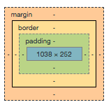

It is kind of like baking a cake. The recipe is the document object model (DOM). The recipe holds the structure of how everything comes together.
The core ingredients and the method of how to bake the cake is the HTML. The recipe will start with a header which will include the title of what you are baking. You could then have a list of the ingredients required and how much.
You could group the ingredients into categories by adding a div tag. For example you could group the dry ingredients by adding a tag - (div class= "dry-ingredients"). You could also add a div tag to ingredients where they have the same properties, for example if you need a teaspoon of salt and a teaspoon of baking powder you could add a div tag - (div class="1-teaspoon) that way when you want to change something that has only 1 teaspoon you would use the class 1-teaspoon. The method of how to bake the cake would be in paragraphs. Each paragraph describing each step.
You then need to decorate the cake. You could choose what colour icing you use, what message to write on the cake. The style of the piping you might use. This is the CSS. The visually appealing part of the cake.
You could then alter the recipe of the cake (HTML) but you could keep the same decoration (CSS). Or vice versa.
Boxifying the design means breaking the website down into all boxes that are on the page. For example the header is a box, the heading (h1) in the header is also a box, the logo (img) in the header is also a box.
The box model is a box that wraps around every element in HTML. It consists of: margins, padding, and the actual content. When you are editing pages in the dev tools in chrome, you can click on an element and it will show you the box model of that specific html element.
